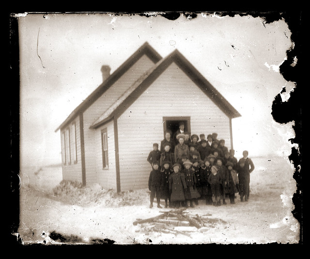

⛏A group of zombies attacked our base last night.
昨晩、ゾンビの群れが私たちの基地を襲撃しました。
[ə ˈɡruːpəv ˈzɑːmbiz əˈtæk̚t aʊr ˈbeɪs læst ˈnaɪt]
- group of で語末子音 /p/ が弱形 of の母音 /ə/ に連結 [ˈɡruːpəv] グループオブ
ア グループオブ ゾンビーズ アタクト アワー ベイス ラスト ナイト

⛏A group of zombies attacked our base last night.
昨晩、ゾンビの群れが私たちの基地を襲撃しました。
⛏Our group is gathering rare materials for the nether fortress.
私たちのグループはネザー要塞用の珍しい材料を集めています。
⛏Let's group the crops together in one area.
作物を1つのエリアに一緒にまとめてグループ化しましょう。
They are grouping resources in different storage areas.
彼らは異なる保管エリアでリソースをグループ化しています。
I'm grouping my diamonds into organized piles.
私は自分のダイヤモンドを整理されたパイルにグループ化しています。
The players were grouping the mobs near the barrier.
プレイヤーたちはバリアの近くでモブをグループ化していました。
I was grouping my resources when the server restarted.
サーバーが再開したとき、私は自分のリソースをグループ化していました。
We had been grouping the blocks for an hour.
私たちは1時間ブロックをグループ化していました。
She had been grouping the chests before the lag spike hit.
ラグスパイクが発生する前に、彼女はチェストをグループ化していました。
⛏We should group together to protect our base from mobs.
モブから基地を守るため、一緒に集まるべきです。
⛏Group up at the entrance before we mine deeper.
もっと深く採掘する前に、入り口で集合してください。